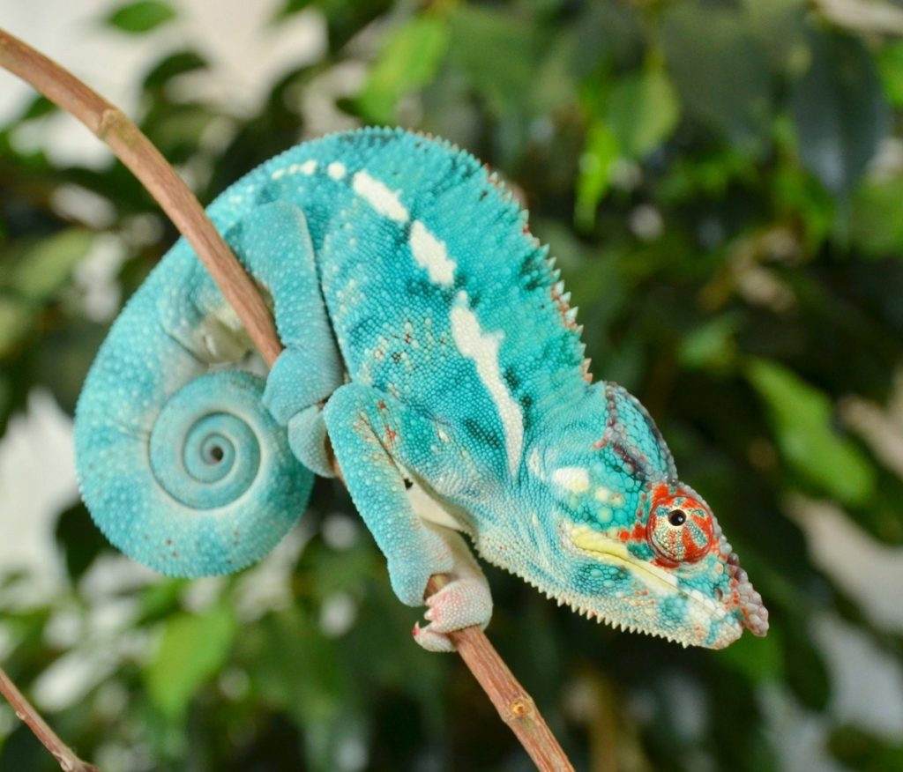

Найвідомішим мисливцем із рептилій, безумовно був тиранозавр (Tyrannosaurus). Ото вже кого без перебільшення можно назвати справжнім монстром. Це був найбільший динозавр-хижак (14 м завдовжки), такий собі дракон із потужними задніми кінцівками і з маленькими сухенькими "ручками". Людям, на щастя, не довелося бути сучасниками тиранозавра, проте режисери та сценаристи багатьох гучних блокбастерів із задоволенням відправляють тиранозавра і його не менш зловісних і лютих побратимів - велоцирапторів (Velociraptor) у наш час. Та й до сучасних рептилій ми ставимося з побоюванням і недовірою: чи хтосб пожалів крокодила, що плаче, чи пригрів на грудях змію і навіть просто погладити ящірку зазвичай мало бажаючих. Щоправда, серед сучасних рептилій хоч якоїсь милості людини удостоїлися черепахи. Але і серед добродушних тортил трапляються досить норовливі персонажі. Звичайно вони не такі небезпечні, як крокодил, змії або комодські варани, та все ж мисливці досвідчені і професійні.
Європейська болотяна черепаха (Emys orbicularis) - активна хижачка. На березі вона годується хробаками, мокрицями, комахами, в у воді ловить рачків, пуголовків, жаб, і вкрай рідко рибу, причому тільки снулу. Зі здоровою рибою в маневреності та стрімкості болотній черепасі не впоратися.
Інші броньовані хижачки віддають перевагу полюванню із засідки. У грі в хованки немає рівних бахромчатій черепасі, або матаматі (Chelus fimbriata), що мешкає у водоймах басейну Амазонки. Варто до черепахи наблизитися рибці, як матамата стрімко відкриває щелепи, і течія швидко захоплює жертву в потрібному напрямку, тобто несе їжу прямо до рота черепахи. Довгі шкірясті пензлики на шиї дуже нагадують замшілу водну рослинність, вони не привертають риб, як це відбувається з язиком-наживкою під час полювання грифонової черепахи, але надійно маскують матамату, завдяки чому рибки підпливають на відстань, достатню для захоплення здобичі. Далі, як от кажуть, справа техніки. Таким самим способом матамата полює на жаб і пуголовків.
Деякі види черепах мають вкрай погану репутацію, така, наприклад, американська кайманова черепаха (Chelydra serpentina), яку називають "рептилією жаху". Полює ця рептилія на великих риб, всіляку водну живність, аж до водоплавних птахів і молодих ондатр, і... поїдає потопельників. Падло черепаха виявляє завдяки досконалому, особливо для черепах нюху, а рибу та іншу водну живність вистежує із засідки, годинами чекаючи жертву серед корчів і водоростей, а потім кидається на неї стрімким кидком. Ходять чутки, що кайманові черепахи, помітивши днище рибальського човна, скупчуються під ним у неймовірній кількості і чекають, поки рибину не зловили на гачок, потім хапають її могутніми щелепами, чим позбавляють рибалок-невдах не тільки улову, а ще й снастей. Швидше за все, це вигадка, оскільки агресивні кайманові черепахи нетерпимі до одноплемінників і вряд чи стали б утворбвати скупчення. Та перевірити цей факт бажаючих немає.
Те, що ящірки їдять комах і слимаків, ні для кого не секрет, більш того, наші ящірки їдять навіть неприємних (гірких) на смак сонечок, правда вживає їх в їжу з такою ж частотою, як людина використовує хрін або гірчицю. Молох страхітливий (Moloch horridus) із пустельних районів Західнрої та Центральної Австралії зобов'язаний такою гучною назвою своїй на рідкість моторошньою зовнішності. Насправді ж ця ящірка дуже мала і абсолютна нешкідлива. У володіннях молоха обов'язково є нора для ночівлі та відпочинку в полуденну спеку, тимчасовий притулок в заростях низьких чагарників і одна або декілька мурашиних стежок - їдальня. Весь свій час ящірка присвячує двом важливим заняттям - прийняттю сонячних ванн і годівлі, старанно при цьому уникаючи жалких комах. Збираючись пообідати, молох вмощується біля мурашиної стежки і швидкими рухами язика захоплює комах, поїдаючи за хвилину 30-45 штук! Зазвичай обід молоха складається з 1-1,5 тисяч мурах.
Болотяна черепаха
Матамата
Кайманова черепаха
Молох страхітливий
А хто не чув про майстерних мисливців - хамелеонів (Chamaeleontidae)? Крок за кроком, ліниво і неквапливо, хамелеон наближається до жертви. Він постійно спостерігає за нею одним зі своїх дивовижних очей, а іншим у цей же час стежить за вузькою дорогою між хиткими гілочками і оглядає околиці, щоб якийсь хижак ненароком не зайшов у тил. Коли рептилія наближається до жертви на потрібну дистанцію, настає черха найфантастичнішого органу хамелеона - його язика. Спочатку хамелеон розминає цого в роті, потім відбувається "постріл". Через чверть секунди прилипла здобич вже у мисливця в шлунку. Час польоту язика хамелеона - від 5 до 19 сотих секунди! Захопити язик здатен 5 грамів. Цілком достатньо, для токо щоб забезпепчити хамелеона їжею.
Тегу (Tupinambis Teguixin) - ящірка з сімейства американських варанів - на батьківщині, в Бразтлії, назтвають курячим вовком, що пояснюється схильністю рептилії красти курчат, навідуючись у курник, як це роблять тхори або лисиці. Тіло ящірки тегу сягає майже метра завдовжки, вона дуже полохлива (і це незважаючи на свої солідні габарити і чималу силу!) і рятується стрімкими різкими стрибками. Однак при необхідності ящірка захищається, як справжнісінькі варани, в першу чергу, завдаючи досить відчутник ударів хвостом, а при більщ тісному контакті пускає в хід потужні кігті й гострі зуби.
Деякі гадюки доповнюють свій войовничий вигляд рогоподібними виростами; рогату гадюку прикрашають парні ріжки, розташовані над очима. Лускаті "роги" над очима рогатої гадюки (Cerastes cerastes), ймовірно, захищають її очі від колючих чагарників і яскравого сонячного світла. Рухається рогата гадюка "бічним ходом", закидаючи вперед і вбік задню половину тулуба і підтягуючи до неї передню частину. При цьому на піску залишається не єдиний слід, а окремі косі смужки під гострим кутом до напрямку руху.
Найбільш незвичайний представник крокодилового племені - гангський гавіал (Gavialis gangeticus). У цього крокодила дуже довгі й вузькі щелепи, які надають йому, радше, не страхітливий, а кумедний вигляд. При цьому за розмірами його цілком можно порівняти з небезпечним гребенястим крокодилом. Паща гавіала занадто вузька, щоб нападати на людину, проте своїми дивними тонкими зубастими щелепами гавіал, як пінцетом, спритно схоплює рибу - свій основний корм. Гавіали ковтають камінці, які в їхніх шлунках відіграють роль жорун, подрібнюючи великі шматки їжі. Браслети, які часто знаходять у шлунках цих рептилій, свідчать не про людожерські схильності гавіала, а про те, що крокодили ковтають прикраси, загублені індійськими красунями, разом із камінчиками.
Хамелеон
Ящірка Тегу
Рогата гадюка
Гангський гавіал